Технолог замеряет эталон и образец спектрофотометром. Система показывает на графике, куда сместился цвет, и подсказывает коррекцию. Попробуйте справа: возьмите точку и сдвиньте её.
Порошковые и жидкие краскиКарты RALПланшет у линииОт 0,0001%
График a*b*: эталон в центредвигайте точку образца
Эталон
Образец
Светлее / темнее (ΔL*)
Цветовое отклонение ΔE*ab——
Демонстрация принципа: коэффициенты учебные. В рабочей версии дозировка считается по вашей базе колорантов, вашему прибору и вашей рецептуре.
Программа собирается под ваше производство
Это не готовый «коробочный» продукт. Программа проектируется под конкретное предприятие и его особенности: порошковые или жидкие краски, а при необходимости и другой процесс, оборудование, приборы, сотрудников. Всё необходимое обсуждается при составлении технического задания (ТЗ).
Процессы и этапы
Путь заявки, статусы, поля и документы настраиваются под ваши процессы, а не наоборот.
Индивидуальные роли
Для каждой роли можно отредактировать доступ, расширить его или создать собственную роль.
Приборы и датчики
Подключаются ваши линии, печи, спектрофотометры и датчики, база колорантов и RAL.
Нейросеть под задачу
Размер и состав сети подбираются под масштаб предприятия и задачи, обучение на ваших данных.
Иллюстрация: производство порошковых и жидких красокИллюстрация: оператор у оборудования, данные вносятся на месте
Как это работает: четыре шага
От замера до подтверждённого результата. Технологу не нужно считать в уме: он видит цвет, график и готовую подсказку.
1
Замер эталона и образца
Прибор снимает эталон, затем образец порошковой краски. Эталон встаёт в центр графика, а точка образца показывает, в какую сторону цвет ушёл: к жёлтому или синему, к красному или зелёному, светлее или темнее.
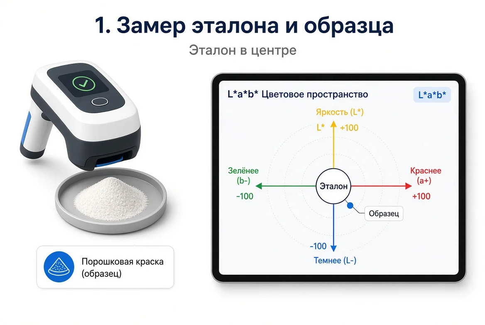
Иллюстрация: замер и положение образца относительно эталона
2
Показать пальцем на графике
На планшете график a*b* крупный и наглядный. Технолог касается точки или двигает её, и сразу видит направление и величину отклонения. Это ускоряет понимание: не таблица цифр, а картинка.
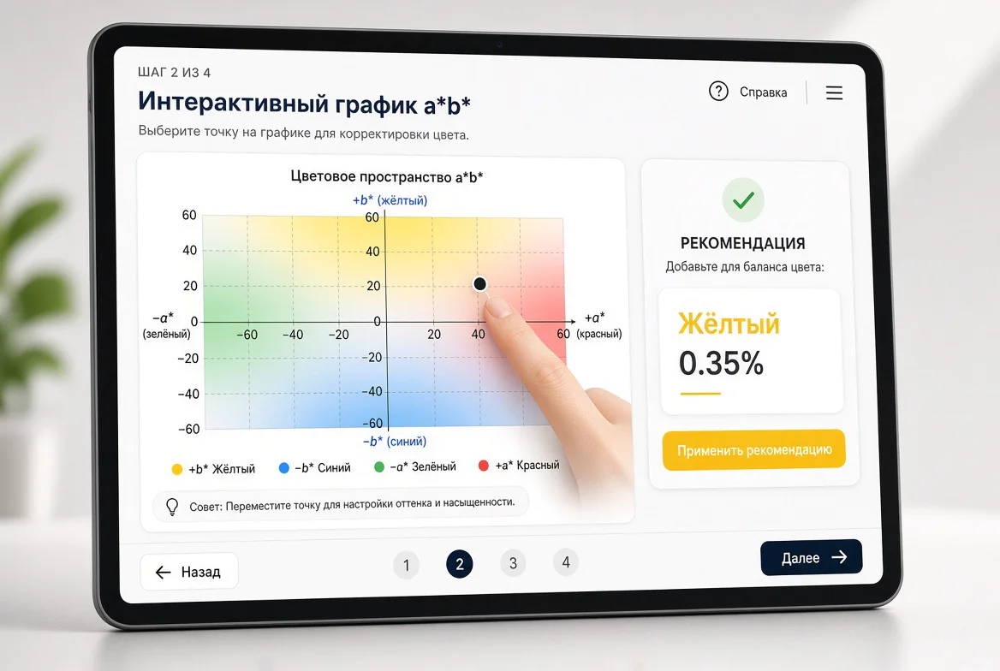
Иллюстрация: интерактивный график и рекомендация по колорату
3
Рекомендация: что и сколько
Система показывает колорант и дозировку, например «жёлтый 0,35%». Шаг дозы очень мелкий, от 0,0001%, и при необходимости до 100% и выше. Для каждого колоранта учитывается влияние на цвет и на яркость.
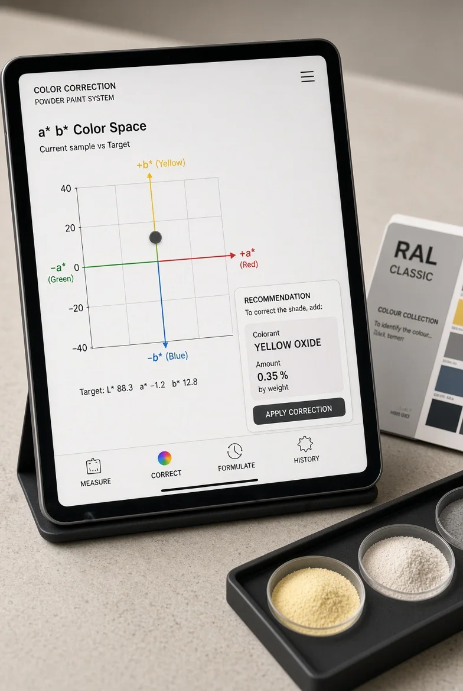
Иллюстрация: планшет, каталог RAL и порошковые образцы
4
Добавили, замерили, повторили
После добавления колоранта в смеситель делается повторный замер. Если ΔE*ab в допуске, цвет соответствует эталону и отчёт сохраняется. Если нет, цикл повторяется с уточнённой дозой.
Иллюстрация: цикл «добавили → замерили → повторили»
Как читать график L*a*b*
Три оси описывают любой цвет. Эталон всегда в центре, а образец показывает, куда он сместился.
Вверх: жёлтый
+b*. Образец жёлтее эталона. Чтобы вернуть цвет, нужен синий колорант или меньше жёлтого.
Вниз: синий
−b*. Образец синее эталона. Чтобы вернуть цвет, нужен жёлтый колорант.
Влево: зелёный
−a*. Образец зеленее эталона. Чтобы вернуть цвет, нужен красный колорант.
Вправо: красный
+a*. Образец краснее эталона. Чтобы вернуть цвет, нужен зелёный колорант.
ΔE*ab — одно число, которое объединяет все три отклонения. Чем оно меньше, тем ближе образец к эталону. Допуск задаёт предприятие под свой продукт и заказчика.
Цветовое пространство L*a*b* в 3D
Каждая точка — цвет RAL Classic. Вправо красный, влево зелёный, к вам жёлтый, от вас синий, вверх светлее. Вращайте тело, задайте эталон и образец и смотрите, как далеко они друг от друга и какой RAL ближе всего к образцу.
Тело цветов: RAL Classic, 190 оттенковпотяните, чтобы повернуть
Отклонение ΔE*ab——
Ближайшие RAL к образцу
Значения L*a*b* взяты из открытого списка RAL Classic, часть цветов оценочная. Цвета на экране приблизительны. Для точной работы нужен замер прибора.
Воронка цветов: как колоранты сливаются в один
Колоранты стекают через воронку в ёмкость. Меняйте подачу каждого, следите, какой цвет получается, и сравнивайте его с целевым.
3D-воронка смешенияпотяните, чтобы повернуть
Подача колорантов
40
25
0
0
0
15
Целевой цвет
Получилосьпока пусто
Цель
Отклонение ΔE*ab——
Учебная модель: колоранты смешиваются как краска (среднее в линейном свете с весом по подаче). В реальности результат зависит от вашей базы и пигментов, поэтому в рабочей версии он считается по вашим данным и замеру прибора.
Слияние цветов в 3D: как рождается оттенок
Колоранты стекают в воронку, закручиваются и сливаются в один цвет. Меняйте дозу каждого колоранта: оттенок в стакане и значения L*a*b* пересчитываются сразу. Сцену можно вращать мышью или пальцем.
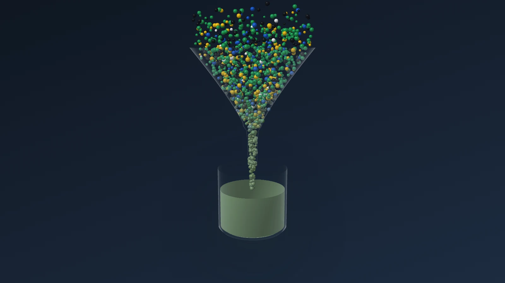
тяните, чтобы повернуть
#000000L* — a* — b* —
Доза колорантов, части
Иллюстрация принципа: цвет смеси считается в линейном пространстве, а не вычитанием пигментов. Рабочая система считает дозу по замеру прибора и вашей базе колорантов.
Система проектируется под прибор класса BYK spectro-guide и под приборы, которые уже стоят у вас в лаборатории. Каталоги RAL подключены как цели для подбора.
Иллюстрация: спектрофотометр, образцы порошковых красок RAL и планшет технолога
Иллюстрация: цветовое пространство, ΔE* и рекомендуемая добавкаИллюстрация: технолог у линии, сравнение цвета на месте
Что получает технолог
Одно рабочее место у линии: замер, график, подсказка по колоранту, история правок. Меньше проб «на глаз», быстрее выход на цвет и меньше повторных переделок.
Что это даёт предприятию
Быстрее запуск
Цвет подбирается за меньшее число итераций, партия выходит на линию раньше.
Меньше брака
Отклонение видно в цифрах и на графике ещё до окраски изделий.
Экономия колоранта
Доза считается точно, а не «на глаз», поэтому меньше перерасхода и пересортицы.
Одинаковый результат
Разные технологи и смены работают по одной логике, а история замеров сохраняется.
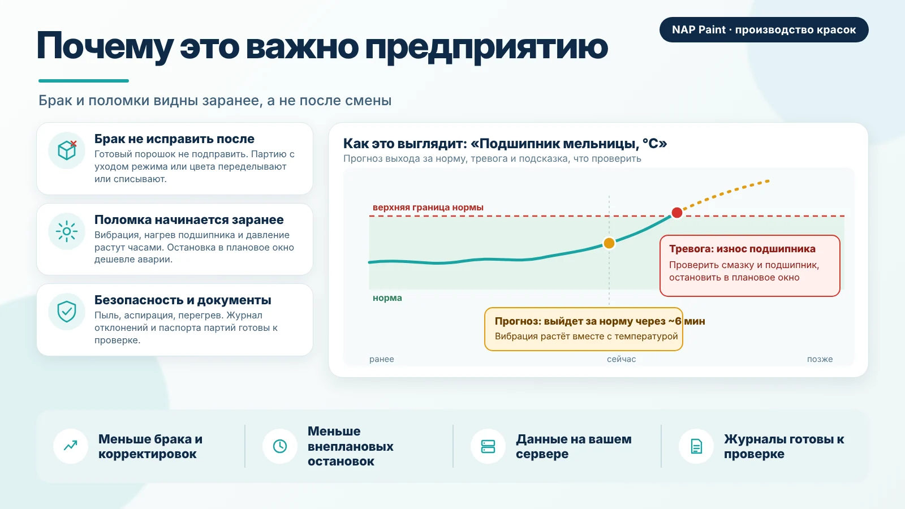
Скриншот для производства: почему это важно предприятию. Прогноз, тревога и подсказка до брака и поломки
Химический модуль: состав и нагрев
Опциональный модуль. Нейросеть сравнивает рецептуру с эталонной и вычисляет результат при смещении ингредиентов и нагреве. Если модуль будет добавлен в проект, выполняется расчёт химического состава.
цвет: отклонение ΔE и сдвиг по яркости и жёлтому тону;
блеск, степень отверждения, индекс стойкости плёнки;
риск пригорания при выбранной температуре и времени;
соотношение смолы и отвердителя, рекомендация по корректировке;
карта режимов: где рабочее окно, где недоотверждение, где риск пригорания.
Сдвиг ингредиентов
Технолог смещает долю ингредиентов, а система сразу показывает, как изменятся цвет, блеск и отверждение, и сравнивает с эталонной рецептурой. Рекомендации подсказывают, что поправить.
Скриншот демо: сравнение рецептур
Нагрев и риск пригорания
При повышении температуры и времени система показывает риск пригорания и желтизны. Карта режимов отмечает рабочее окно, и точка режима видна на ней. После обучения на данных предприятия система может заранее предупреждать о риске пригорания.
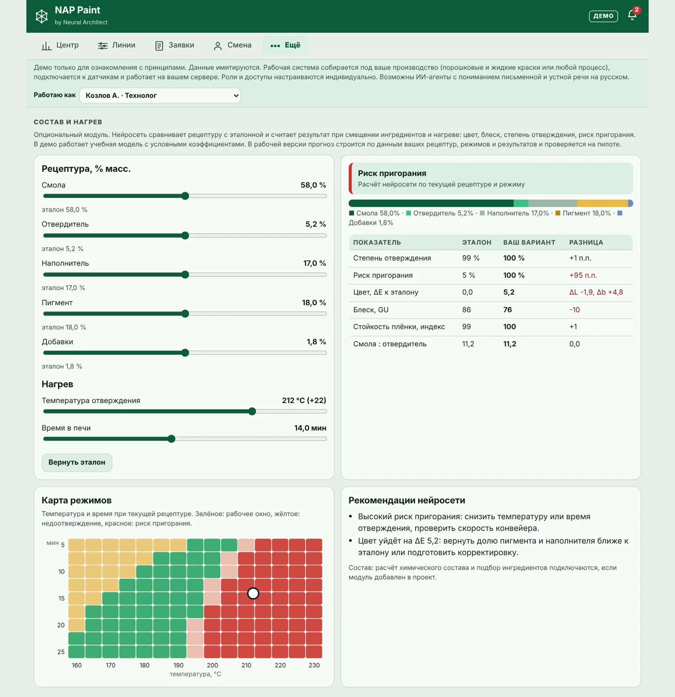
Скриншот демо: нагрев и карта режимов
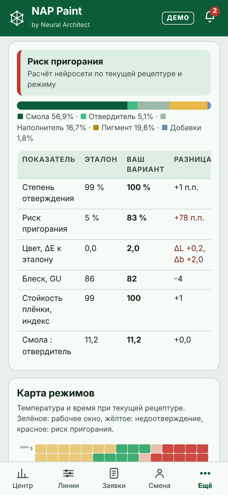
На телефоне
Скриншоты демонстрационной версии: используется учебная модель с условными коэффициентами. В рабочей версии прогноз строится по данным ваших рецептур, режимов и результатов. Точность проверяется на пилоте и зависит от объёма и качества данных.
Как нейросеть читает состав и предсказывает нагрев
Два экрана демо с одним составом: в первом меняется рецептура, во втором растёт температура. Цифры считает учебная модель с условными коэффициентами. В рабочей версии её обучают на данных вашего производства.
На входе модель получает доли пяти ингредиентов, температуру и время в печи. На выходе: степень отверждения, риск пригорания, сдвиг цвета ΔE, блеск и индекс стойкости плёнки. Эталонную рецептуру модель считает тем же способом, поэтому разница в таблице честная.
12345
Пример 1. Сдвинули рецептуру, режим не трогали
1
Вход: рецептура. Отвердителя на 0,6 п.п. меньше эталона (4,6 % вместо 5,2 %), наполнителя и пигмента больше на 2,5 и 2,4 п.п. Под каждым ползунком показан эталон.
2
Вход: нагрев. 190 °C и 10 минут. Режим из эталона, поэтому результат объясняется только рецептурой.
3
Выход: сравнение с эталоном. Отверждение 90 % против 99 %, ΔE 0,7, блеск 82 против 86 GU, индекс стойкости 85 против 99. Риск пригорания остался 5 %. Соотношение смола : отвердитель ушло с 11,2 до 12,6.
4
Карта режимов. Модель считает эту же рецептуру для каждой пары «температура × время». Зелёное — рабочее окно, жёлтое — недоотверждение, красное — риск пригорания. Белая точка — выбранный режим, она в зелёной зоне.
5
Рекомендация. Отвердителя меньше расчётного, ориентир около 5,2 % вместо 4,6 %.
Результат. Режим безопасен, но плёнка отвердится слабее эталона и будет менее стойкой. Поправить нужно рецептуру, а не температуру.
12345
Пример 2. Рецептура эталонная, температуру подняли
1
Вход: рецептура. Все ползунки на эталоне, разницы по составу нет.
2
Вход: нагрев. 212 °C (на 22 °C выше эталона) и 14 минут.
3
Выход: сравнение с эталоном. Риск пригорания вырос с 5 % до 100 %. Цвет ушёл на ΔE 5,2: темнее на 1,9 по L* и жёлтее на 4,8 по b*. Блеск упал на 10 GU. Отверждение и стойкость по 100 — формально выше эталона, но риск и цвет показывают, что режим вышел за рабочее окно.
4
Карта режимов. Точка попала в красную зону. Зелёная зона для этой рецептуры лежит левее, при меньшей температуре.
5
Рекомендации. Снизить температуру или время, проверить скорость конвейера. Для цвета: вернуть доли пигмента и наполнителя ближе к эталону или подготовить корректировку.
Результат. Партия вышла бы с пригоранием и жёлтым сдвигом цвета. Система показывает это при подборе режима, до запуска печи.
Смешение состава — интерактивный пример
учебное демо
Демонстрация принципов. В рабочей версии — ваши компоненты, допуски и расчётные модели.
Смеситель
Потяните, чтобы повернуть по любой оси. Двойной клик возвращает вид
62%
28%
8%
2%
Смола : отвердитель
2.21 : 1
Цель: 2.2–2.4 : 1
Сумма
100%
Норма
Состав в допуске.
Поверхностное натяжение. На границе жидкость–воздух молекулы притягиваются сильнее внутрь объёма, чем наружу. Из‑за этого поверхность ведёт себя как упругая плёнка. В красках от натяжения зависят смачивание подложки, растекание и образование дефектов (кратеры, апельсиновая корка).
Гидродинамика смешения. При перемешивании возникают ламинарные или турбулентные потоки. Для вязких смол важны сдвиговые напряжения: они разрушают агломераты пигмента и выравнивают температуру. Слишком слабый поток — несмешанные зоны; слишком сильный — воздушные включения и пенообразование.
Камера смешения порошков
70%
18%
8%
5
Однородность смеси0%
Порошки смешиваются. Однородность растёт со временем и интенсивностью.
Зачем это нужно. В начале компоненты лежат слоями: база, пигмент, добавки. Пока смесь неоднородна, в одной пробе пигмента больше, в другой меньше, и цвет покрытия плывёт от партии к партии. Шкала однородности показывает, насколько пигмент и добавки уже распределились по камере. Её растят время и интенсивность перемешивания. Доли компонентов можно менять с нуля, шкала не зависит от их суммы.
Смешение порошков. Частицы разного размера и плотности сегрегируются при вибрации и течении. Для однородности нужны сдвиг и диффузия: мелкий пигмент заполняет пустоты между крупными гранулами смолы. В демо частицы движутся хаотично — в реальности траектории задаёт геометрия смесителя.
Упрощённые обозначения типичных компонентов порошковых и жидких систем. Реальные промышленные рецептуры сложнее и часто являются коммерческой тайной.
Эпоксидная смола (фрагмент)
C₂₁H₂₄O₄
Диглицидиловый эфир бисфенола A (DGEBA) — основа многих эпоксидных порошковых красок.
Отвердитель (пример)
C₉H₁₀N₂O
Дициандиамид (DICY) и его производные — типичные отвердители для эпоксидных порошков.
Пигмент (диоксид титана)
TiO₂
Белый пигмент, высокая укрывистость. Размер частиц влияет на блеск и рассеяние света.
Пигмент (оксид железа)
Fe₂O₃
Красный / жёлтый железооксидный пигмент. Стабилен при нагреве в печи полимеризации.
Полиэфирная смола (звено)
–[C(O)–R–C(O)–O–R'–O]ₙ–
Карбоксил- или гидроксил-функциональные полиэфиры для гибридных и полиэфирных систем.
Добавка (воск, упрощённо)
CₙH₂ₙ₊₂
Полиэтиленовые / амидные воски регулируют растекание, текстуру и антиблокинг.
Связь с цветом. Спектр отражения пигмента (TiO₂, Fe₂O₃ и др.) вместе с толщиной и блеском плёнки определяет координаты L*a*b*. Смещение соотношения смола/отвердитель меняет степень отверждения и оптику поверхности — поэтому химический и цветовой модули связаны.
Контроль производства и журналы
Вторая часть решения: контроль параметров, отклонения и журналы. Логика универсальная и изначально отработана на реальном производстве. Ниже скриншоты рабочей системы ZHUR, она адаптируется под любое предприятие.
Схема: датчики → сервер → Wi-Fi цеха → планшет, телефон, терминал. Данные локально, работает без интернетаРаньше, чем брак: датчик, уведомление агента, вмешательство
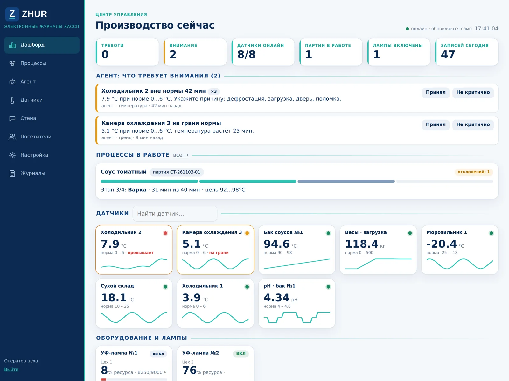
Центр управления: тревоги, датчики, партии, оборудование — на одном экране
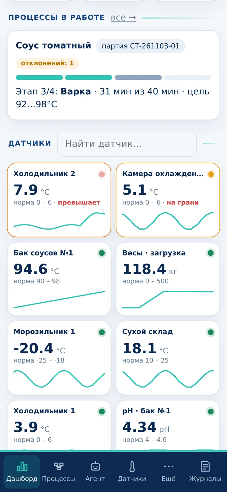
На телефонеРежим «киоск» для сотрудников цеха: крупные кнопки, ничего лишнего
Сводки и сравнение периодовНастройки и вечерний отчёт руководителю
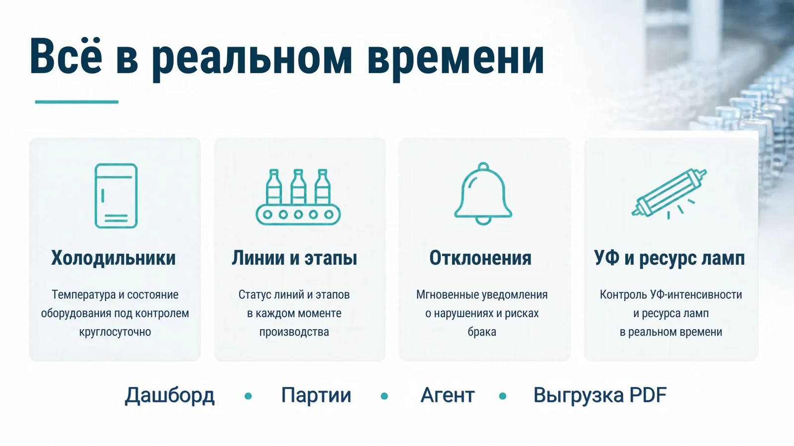
Что контролируется: температура, линии и этапы, отклонения, ресурс ламп. Выгрузка в PDFСкриншоты ZHUR показывают логику контроля; для вашего предприятия набор параметров настраивается заново (например: печи, температуры, влажность, время цикла).
Инструмент коррекции цвета: бесплатный и мощный
Введите L*a*b* эталона и образца со спектрофотометра (или готовое отклонение), размер замеса или пробы и содержание пигмента в рецептуре. Инструмент подберёт добавки, предложит несколько вариантов с ценой и покажет прогноз. После добавки вводите новый замер: модель сама уточняется под ваш замес. Бесплатно, без регистрации, работает офлайн.
Расчёт ориентировочный и не заменяет решения технолога. Данные остаются в браузере. Типовые чувствительности колорантов приблизительные: для точного результата откалибруйте их по своим добавкам.
Экспертиза: что мы знаем о производстве красок
Система строится на понимании технологии: какие параметры решают качество, какие признаки появляются перед браком и поломкой, где ставить датчики и какие нормы разумны. Ниже: типовые линии, причины брака и то, как это показано в демонстрации.
Порошковая краска: путь и контролируемые параметры
1Предсмесьцикл 1–3 мин, температура смеси до 45 °C, обороты смесителя
2Экструзиязоны цилиндра 70–130 °C, момент, давление расплава 5–25 бар, вибрация редуктора
3Охлаждениевалок 5–20 °C, лента 1–2 мм, температура чипсов на выходе
4Дроблениечипсы 5–10 мм: тёплые не ломаются, а мнутся
5Помол ACMD50 около 30–45 мкм, воздух в мельнице, перепад на фильтре, подшипник
6Просев и фасовкасито 120–125 мкм, масса мешка
7Нанесение и печьнапряжение пистолетов, влажность камеры, температура металла 175–205 °C, время в печи
Жидкая краска: путь и контролируемые параметры
1Диссольверокружная скорость диска 18–26 м/с, температура базы до 50 °C, вязкость
2Бисерная мельницабисер 0,3–0,8 мм, температура на выходе до ~55 °C, давление в камере
3Контроль помолатонкость по Хегману 6,5 и выше, поточный грайндометр
4Долив и тонировкаpH, плотность, сухой остаток, колеровка по цвету
5Фильтрацияперепад давления на фильтре, замена по состоянию
6Наливмасса налива на весах, паспорт партии
Типовые причины брака и что видно заранее
Проблема
Частые причины
Что видно заранее
Вкрапления, гель-частицы
перегрев в экструдере, пригорание на шнеке или головке
рост температуры зоны, давления и момента; тёмные частицы на ленте по камере
«Апельсиновая корка»
грубый помол, влага в порошке и воздухе, неверная толщина плёнки
D50 выше нормы, влажность камеры, толщина плёнки
Недоотверждение, слабая адгезия
низкая температура металла или мало времени в печи
температура металла (PMT), скорость конвейера, время в печи
Разнотон между партиями
нестабильная подача и дисперсия пигмента, режим печи
ΔE к эталону, момент и давление экструдера, температура печи
Липкие чипсы, забитая мельница
тёплый валок, сбой охлаждающей воды
температура воды и валка, температура чипсов, перепад на фильтре
Остановка по подшипнику
износ или нехватка смазки
вибрация и температура растут вместе, меняется спектр
Износ шнеков
абразив, посторонний предмет
падает давление при том же моменте, растёт ток привода
Грубая жидкая краска
износ бисера, мало проходов, перегрев мельницы
Хегман ниже 6,5, мощность привода, температура и давление в камере
Раньше отказа есть время действовать
У большинства поломок между первым признаком (P) и отказом (F) есть интервал: от часов до недель в зависимости от узла. Система нужна, чтобы увидеть точку P: рост вибрации, нагрев, уход тренда. Тогда остановка переносится в плановое окно, а запчасть заказана заранее.
Нормы в демонстрации условные и взяты из типовой практики. В рабочей системе их задаёт технолог под ваши рецептуры и оборудование.
Скриншот демо: экструдер в разрезе, датчики по зонам (2–6)Скриншот демо: камера над лентой ловит вкрапления и излом
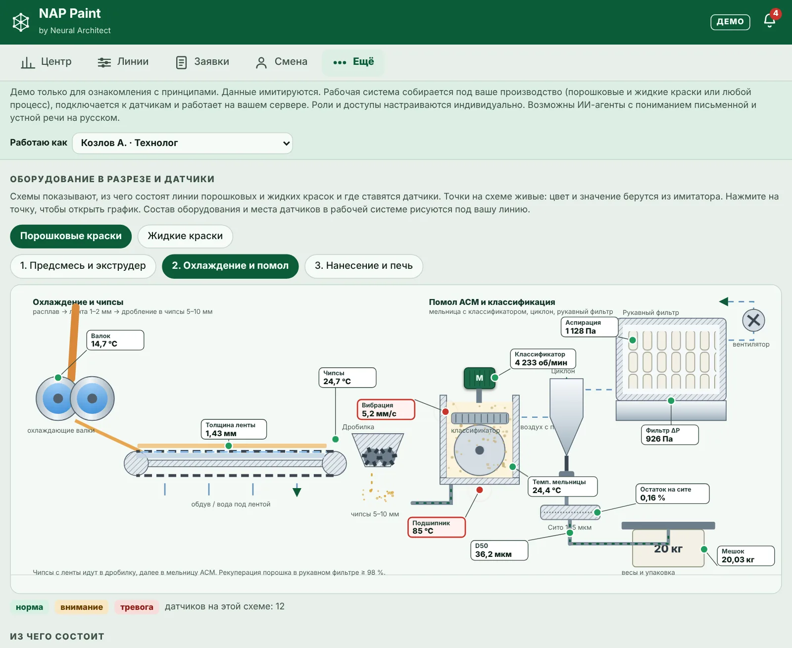
Скриншот демо: мельница, вибрация и нагрев подшипника в тревоге
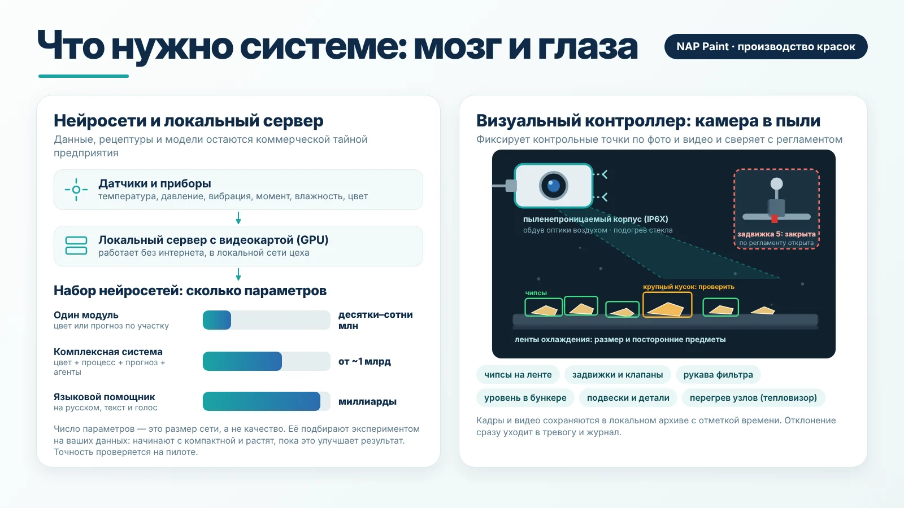
Иллюстрация: нейросети, сервер и визуальный контроллер
Мы создадим программу под ваш проект и ваше оборудование. Датчики и приборы подключат ваши инженеры, мы вместе с вами или наши инженеры (их работы рассчитываются дополнительно).
для чего это нужно и что для этого нужно
чем поможет: меньше брака, простоев и аварийного ремонта
калькулятор: сколько вы сохраните и за какой период
Спросите агента о любой линии или обо всех сразу: он покажет вывод, подтверждение с датчиков, кадр камеры с отметками, прогноз поломок и «цену бездействия». Агент ещё и сообщает сам, не дожидаясь вопроса.
Демонстрация: данные пяти линий имитированы. В рабочей версии агент подключается к вашим датчикам, камерам и технологическим картам и работает на вашем сервере.
Команда и память агента: он знает каждую линию
У каждого сотрудника свой вход и роль. Оператор и техник оставляют комментарии по линии, а агент сам спрашивает причину остановок и сбоев. Ответ попадает в память только после подтверждения технолога, а затем учитывается в прогнозе. Так агент понимает не только цифры датчиков, но и то, что происходило на линии физически.
Событие
Агент видит остановку, просадку скорости или рост вибрации
Вопрос человеку
«Линия 3 стояла 22 минуты. Причина?»
Ответ
Оператор или техник выбирает причину или пишет своими словами
Подтверждение
Технолог подтверждает или отклоняет ответ
Память и прогноз
Запись в памяти линии, прогноз пересчитан
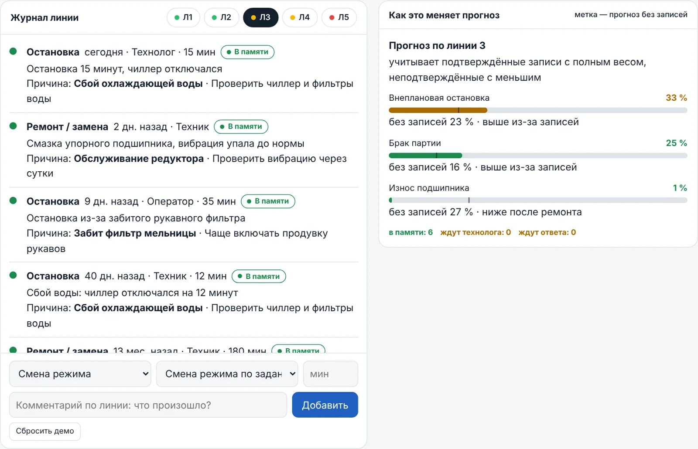
Скриншот демо: журнал линии, подтверждение технолога и пересчёт прогноза
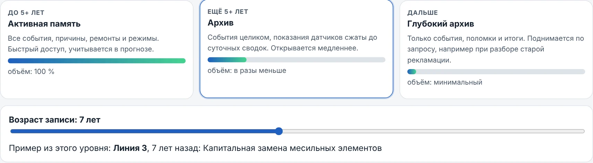
Скриншот демо: три уровня памяти, активная, архив и глубокий архив
Роли и права
Роль
Что делает
Что видит
Может подтверждать в память
Оператор
отмечает остановки и сложности, отвечает на вопросы агента
свою линию и её журнал
нет, ответ ждёт технолога
Техник
фиксирует ремонты и замены, отвечает на технические вопросы
линии и оборудование участка
нет, запись ждёт технолога
Технолог
подтверждает причины и режимы, фиксирует смену режима
все линии участка и прогнозы
да
Руководитель
смотрит сводки, потери и тренды, оставляет комментарии
все линии, сводки и итоги
нет
Три уровня памяти
Агент помнит каждую линию годами. Чем старше запись, тем компактнее хранение: события и подтверждённые причины остаются, а секундные показания заменяются сводками.
до 5+ лет
Активная память
Все события, причины, ремонты и режимы. Быстрый доступ, учитывается в прогнозе.
ещё 5+ лет
Архив
События целиком, показания датчиков сжаты до суточных сводок. Открывается медленнее.
дальше
Глубокий архив
Только события, поломки и итоги, в разы меньше по объёму. Поднимается по запросу, например при разборе старой рекламации.
Сценарии из демонстрации
Неожиданная остановка
Агент видит простой 22 минуты и спрашивает причину
Оператор выбирает «забит фильтр»
Технолог подтверждает, запись идёт в память
Риск повторной остановки в прогнозе растёт
Замена подшипника
Техник записывает замену
Пока запись не подтверждена, она учитывается с весом 60 %
После подтверждения риск износа падает, ресурс узла сброшен
Смена режима
Технолог фиксирует новый режим под цвет
Агент знает, что сдвиг температуры ожидаемый
Ложная тревога не поднимается
Спорная причина
Оператор называет одну причину, а датчики показывают другую
Агент просит технолога проверить
Технолог отклоняет ответ и записывает верную причину
В демонстрации вход имитирован и данные хранятся только в браузере. В рабочей версии логины, пароли, роли и память хранятся на вашем сервере, а сроки хранения настраиваются под ваши требования.
Система в работе: от заявки до готовой партии
Единая картина для всех участников: заявки, задачи, рецепты, премиксы, корректировки, линии, операторы, отходы, простои, температуры и журналы. Ниже скриншоты демонстрационной версии. Этапы, роли и нормы настраиваются под процессы конкретного предприятия.
Это рабочая демонстрация принципа: вы показываете на графике, где образец относительно эталона, а программа говорит, какой колорант и сколько добавить.
Рецептура (ТТК) и граммы
Заполняете процент каждого пигмента в замесе, масса берётся по регламенту. Грамм к добавлению = масса × % пигмента в ТТК × % добавки. Пример: 1000 г × 3 % × 10 % = 3 г. Формула видна в каждой строке.
Нейро-подсказка
Малая нейросеть (MLP 9→20→20→3) работает прямо в браузере и предсказывает, как каждая краска сдвигает цвет, с учётом насыщения и состояния базы. Веса хранятся локально.
Планировщик доз
Первый шаг неполный: убрать краску нельзя, поэтому перебор хуже недобора. Цель — 1–2 корректировки, максимум 3. Для готовой партии есть режим «только добавление».
Журнал и обучение
Цикл «добавил, замерил, обучил» уточняет силу каждой краски, и следующий шаг становится смелее. Результат сверяется с прогнозом.
Работа с прибором
Режим Δ с экрана BYK spectro2guide, показатели ΔL*, Δa*, Δb*, ΔC*, ΔH*, ΔE*ab, ΔE00 и ΔE CMC 2:1, блеск 60° и быстрый ввод строки с прибора.
Эталон и график
RAL Classic (190 цветов) с поиском по коду, эталон всегда в центре графика, масштаб от ±0,1 до ±100.
Советы через LLM (Claude, Grok, Qwen, DeepSeek, Kimi, GigaChat) по серверному шлюзу запланированы для продукта. В демо есть кнопка копирования готового запроса. Стартовые силы красок ориентировочные, их калибруют на вашей базе.
В демо можно переключать роли («Работаю как»), двигать заявку по этапам, вносить данные оператора и запускать сценарии отклонений. Данные в демо имитируются.
Центр управления
Сводка по производству: тревоги, внимание, датчики онлайн, заявки и линии в работе, число корректировок на заявку. Каждое отклонение сопровождается подсказкой, что проверить, и кнопками «Принял» и «Не критично».
Скриншот демо: центр управления
Путь заявки
Заявка проходит этапы: обработка, задача технологу, рецепт, премикс (малый или большой), проверка и корректировки, запуск на линии, контроль качества. На каждом этапе отвечает своя роль и видит только свои задачи: «Ждут меня».
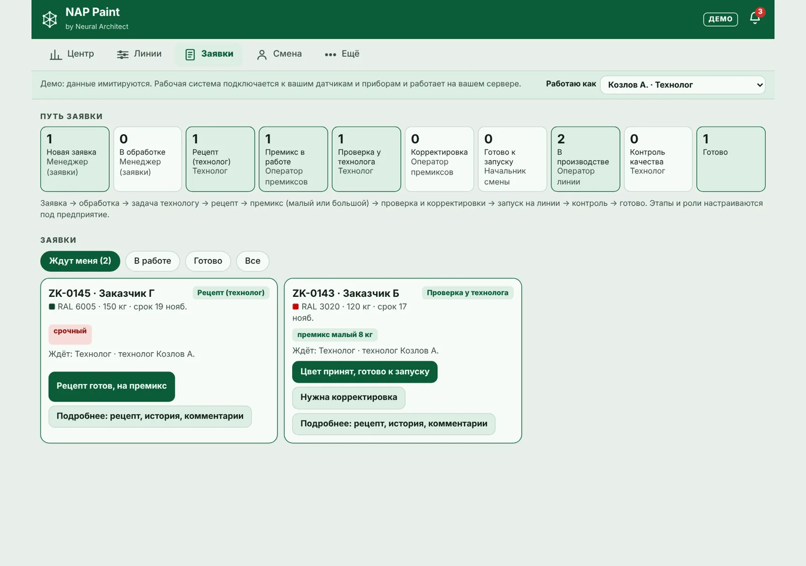
Скриншот демо: заявки и этапы
Заявка подробно
Рецепт, размер премикса, режим на линии по задаче, список корректировок, история действий и комментарии участников. Ничего не теряется между технологом, премиксом и линией.
Скриншот демо: карточка заявки
Линии и установки операторов
Видно, какая линия работает, какая свободна, чем занята и кто оператор. Для каждой линии рядом: режим по задаче, установка оператора и реальная температура в данный момент. Если оператор выставил значение вне задачи или факт расходится с установкой, система сразу показывает отклонение.
Скриншот демо: линии и отклонения
Оператор вносит данные с телефона
Выпуск, отходы с причиной, простои, замены, установки и заметки. Каждая запись попадает в журнал с именем и временем. Оператор вносит данные только по своей линии, начальник смены по любой.
Линия на телефоне
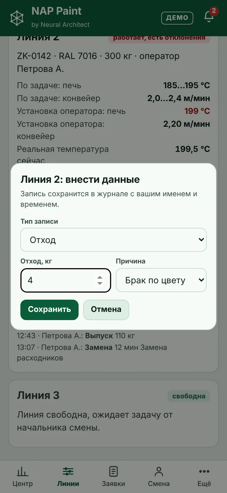
Ввод отхода
Смена и персонал
Кто сейчас на смене, на какой линии и сколько часов отработано, табель за период. Итоги смены: выпуск, отходы, простои. Начальник смены передаёт смену одной записью, в которую автоматически попадает число открытых отклонений.
Скриншот демо: смена и персонал
Роли и доступ
Права каждой роли настраиваются индивидуально: доступ к разделам, действия, этапы заявки, которые ведёт роль. Можно добавлять собственные роли, например «Контролёр качества» или «Лаборант», и назначать их сотрудникам. Каждое изменение доступа попадает в журнал.
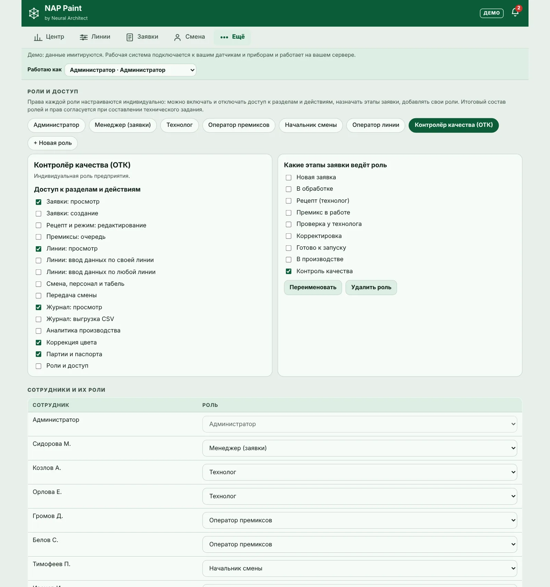
Скриншот демо: роли и доступ
Премиксы: малые и большие
Отдельная очередь для оператора премиксов: большие и малые премиксы, рецепт и масса, корректировки с пояснением технолога. После готовности технолог получает сообщение и проверяет цвет.
Скриншот демо: очередь премиксов
Аналитика производства
Выпуск и отходы по линиям, причины отходов, простои и замены, число корректировок по заявкам. Видно, где теряется время и материал. Набор отчётов согласуется при составлении ТЗ.
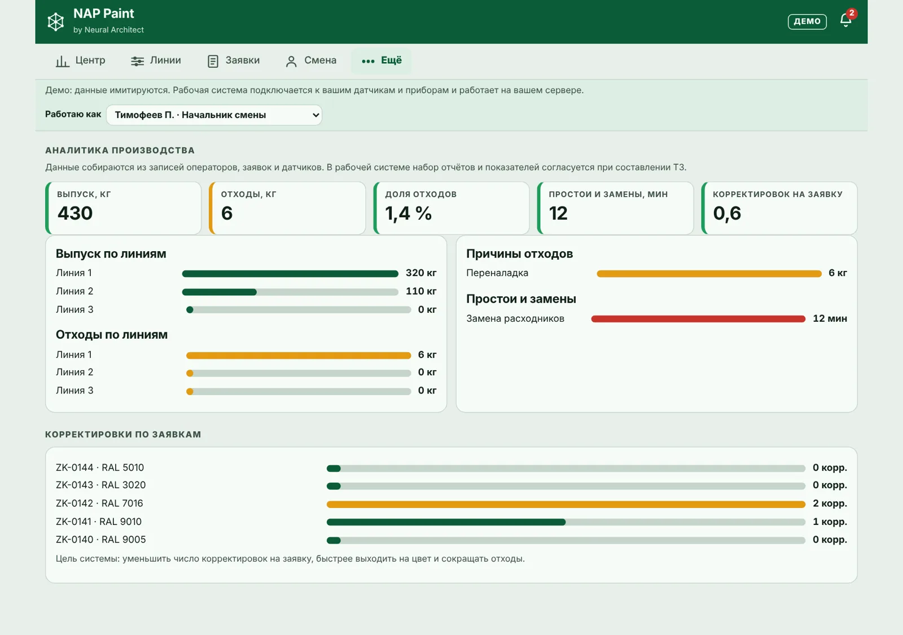
Скриншот демо: аналитика
Партии и паспорт качества
Готовая продукция по партиям: цвет, поверхность, масса, срок годности, результат контроля цвета. Паспорт качества и этикетка печатаются по форме предприятия. Форма документа и набор полей согласуются при составлении ТЗ.
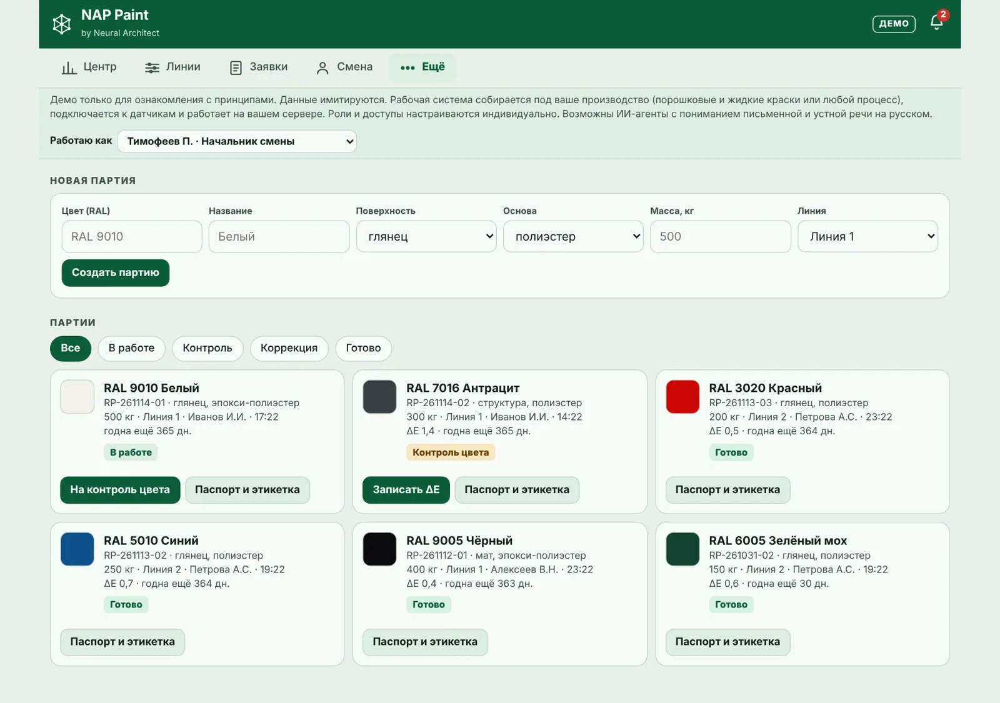
Скриншот демо: партии
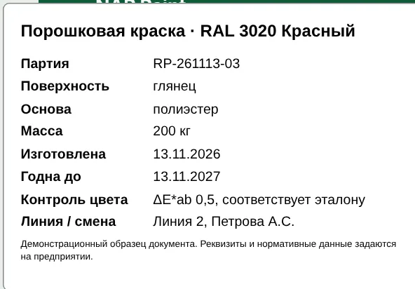
Паспорт партии (пример)Иллюстрация: печать паспорта и этикетки
Помощник технолога
Отвечает по текущему состоянию производства: что не так, какие возможны причины, что проверить. Возможны ИИ-агенты с пониманием письменной и устной речи на русском. Глубина помощника и регламенты, на которых он работает, определяются задачей.
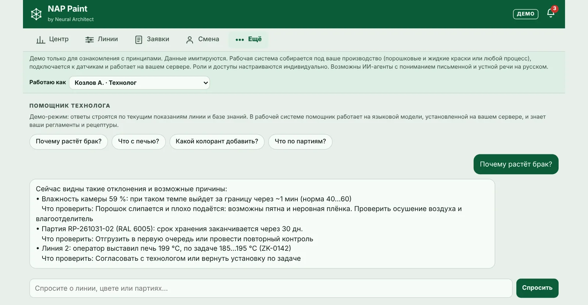
Скриншот демо: помощник
Журналы
Все действия людей и отклонения датчиков сохраняются: кто, когда и что сделал. Фильтры по заявкам, операторам, сменам и тревогам, выгрузка в CSV для проверок и отчётов.
Скриншот демо: журнал
Датчики в реальном времени
Температуры, скорость конвейера, влажность камеры, аспирация, толщина покрытия, цвет. Для каждого параметра норма, график за последние минуты и прогноз выхода за границу ещё до появления брака.
Скриншот демо: датчики
Коррекция цвета
Модуль для работы со спектрофотометром: график a*b*, подсказка, какой колорант и сколько процентов добавить. Меньше корректировок и быстрее выход на цвет.
Скриншот демо: коррекция цвета
Кто что делает
Базовые роли показаны как пример. Для вашего производства роли создаются индивидуально: доступ каждой роли можно отредактировать и расширить.
Менеджер
Принимает и обрабатывает заявки, формирует задачи.
Технолог
Составляет рецепт, задаёт режим, проверяет цвет, назначает корректировки.
Оператор премиксов
Делает малые и большие премиксы, сообщает технологу о готовности.
Начальник смены
Назначает линию и оператора, контролирует смену, передаёт смену.
Оператор линии
Выставляет установки, вносит выпуск, отходы, простои и замены.
Администратор
Настраивает роли, этапы, нормы и доступы.
Центр на телефоне
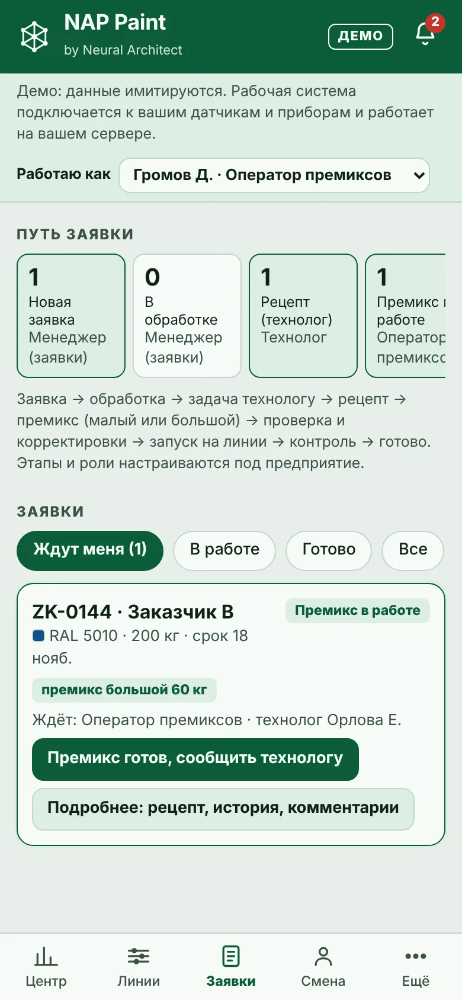
Заявки: задачи оператора премиксовСмена на телефонеПремиксы на телефоне
Скриншоты сделаны в демонстрационной версии: данные имитируются, имена и заказчики вымышленные. Названия этапов, роли, нормы и поля настраиваются под процессы предприятия.
Кто что видит и как всё передаётся
В демо у каждого этапа заявки есть ответственная роль, а отклонения попадают в центр управления тем, кто должен отреагировать. Права ролей и цепочки сообщений настраиваются под предприятие. Ниже реальные экраны демо, а где роли в демо нет, это отмечено.
Ввод данных оператором на телефоне
Оператор линии
Есть в демо
Что видит
Свою линию и задачу: рецепт, режим, установки печи. Форму ввода: выпуск, отход с причиной, простой, замена, установки, заметка.
О чём получает сообщения
Тревогу, если выставленная температура вышла за диапазон задачи.
Что может сделать
Вносить данные по своей линии и подтверждать тревоги. Править рецепт и режим не может.
Кому передаёт
Завершает выпуск и передаёт партию на контроль качества.
Карточка заявки: рецепт, корректировки, история
Технолог
Есть в демо
Что видит
Заявки на рецепт, карточку заявки с рецептом, корректировками и историей, очередь премиксов, график цвета, модуль «Состав и нагрев», аналитику.
О чём получает сообщения
Заявку на рецепт, сообщение «премикс готов» и партии на контроль качества.
Что может сделать
Править рецепт и режим, принять цвет или запросить корректировку, принять партию или вернуть её на линию.
Кому передаёт
Рецепт готов, и заявка уходит на премикс. Цвет принят, и партия готова к запуску.
Смена: итоги, задачи, персонал, передача смены
Начальник смены
Есть в демо
Что видит
Центр управления с тревогами, все линии, смену, персонал и табель, партии, журнал и аналитику.
О чём получает сообщения
Все тревоги по цеху и сообщение, что партия готова к запуску.
Что может сделать
Назначить линию и оператора, вносить данные по любой линии, передавать смену, выгружать журнал в CSV.
Кому передаёт
Запускает партию в производство. При отклонении согласует решение с технологом или возвращает установку по задаче.
Роли и доступ: права роли, этапы заявки, сотрудники
Старший (главный) технолог
Настраивается, в демо не создана
Что видит
Типовой набор прав: рецепты и режимы всех линий, аналитику по сменам и партиям, журнал отклонений.
О чём получает сообщения
Отклонения, которые не закрыты на уровне технолога или начальника смены. Правило эскалации настраивается.
Что может сделать
Утверждать изменения рецептуры и режима, разбирать повторяющийся брак по аналитике.
Кому передаёт
Решения возвращаются технологу и начальнику смены и записываются в журнал.
Аналитика: выпуск, отходы, простои, корректировки
Руководство
Настраивается, в демо не создана
Что видит
Сводку и аналитику: выпуск, отходы, простои и корректировки по линиям, заявки и партии. Не поток тревог, а итоги.
О чём получает сообщения
Вечерний сводный отчёт и крупные отклонения, если их включили в правилах.
Что может сделать
Создавать заявки, сравнивать линии и смены. В демо близкая роль называется «Менеджер (заявки)».
Кому передаёт
Решения идут через начальника смены и технолога, а не напрямую на линию.
Датчики производства и их тренды
Технический персонал (ремонт)
Настраивается, в демо не создана
Что видит
Состояние оборудования: вибрацию, ток, температуры узлов и зон, тренды датчиков. В демо показаны датчики и тренды.
О чём получает сообщения
Предупреждения о риске поломки с указанием узла и прогноза времени, например рост вибрации экструдера.
Что может сделать
Принять заявку на ремонт, отметить выполненную работу и закрыть предупреждение после осмотра.
Кому передаёт
Сообщает начальнику смены об остановке или замене узла. Запись остаётся в журнале.
Как отклонение доходит до нужного человека
1. Источник
Датчик, запись оператора, установка линии или срок хранения партии.
2. Страж параметров
Сравнивает значение с нормой, с задачей и с рецептурой. Нейросеть добавляет прогноз.
3. Центр управления
Тревога (красная) или внимание (жёлтая) появляется на экране, на значке колокольчика растёт счётчик.
4. Ответ человека
Кнопки «Принял» или «Не критично». В тексте сразу написано, что проверить.
5. Журнал
Тревога, ответ и действие записываются. Журнал выгружается в CSV и идёт в паспорт качества.
6. Эскалация
Если никто не ответил, сообщение уходит следующему по цепочке: начальник смены, старший технолог, руководство, ремонт.
в рабочей версии, в демо нет
Что делает автоматика, а что решает человек
Автоматика
Решает человек
Собирает показания датчиков и записи операторов
Принимает тревогу или отмечает «не критично»
Проверяет нормы, установки против задачи, сроки хранения
Меняет рецепт или режим
Считает прогноз и подбирает дозу колоранта
Вносит добавку и принимает цвет
Адресует сообщение нужной роли
Останавливает или меняет процесс
Ведёт журнал, паспорт качества и этикетку
Принимает партию или возвращает на линию
В демо система уведомляет и советует, а решения остаются за людьми. Автоматическое управление оборудованием это отдельный этап, его вводят только по согласованию с технологами предприятия.
Как работает агент
1
Наблюдает. Читает датчики и записи операторов.
2
Сверяет. Сравнивает с нормами, задачей, рецептурой и эталоном, прогнозирует отклонение.
3
Объясняет. К тревоге добавляет, что проверить: вероятную причину и действие.
4
Адресует. Отправляет сообщение той роли, которая отвечает за этап.
5
Отвечает на вопросы. Помощник технолога понимает вопросы вроде «Почему растёт брак?» и «Что с печью?».
В демо ответы строятся по текущим показаниям линии и базе знаний. В рабочей версии помощник работает на языковой модели на вашем сервере и знает ваши регламенты и рецептуры.
Помощник технолога отвечает по отклонениям (экран демо).
Оборудование в разрезе: где стоят датчики
В демо собраны линии порошковых и жидких красок: от премиксера и экструдера до печи и налива. Датчики поставлены на рабочих местах: по зонам цилиндра экструдера (от 2 до 6), на валках, мельнице, камере нанесения, печи, диссольвере, бисерной мельнице и линии налива.
Скриншот демо: двухшнековый экструдер в разрезе, датчик на каждой зоне цилиндра. Красным показана тревога (перегрев зоны)
Порошковая линия
предсмесь: обороты, температура смеси, подача
экструдер: зоны цилиндра 2–6, давление и температура расплава, момент, вибрация редуктора
сито и фасовка, камера нанесения, печь и PMT, цвет и блеск
Жидкая линия
диссольвер: скорость диска, мощность, температура и вязкость базы
бисерная мельница: давление, температура, мощность, тонкость по Хегману
долив: pH, плотность, сухой остаток, уровень
фильтр и налив: перепад давления, масса налива
Разные ситуации
перегрев зоны, засор головки, сбой охлаждающей воды
износ подшипника: вибрация и нагрев растут вместе
липнут чипсы, забит фильтр, прорыв сита
перегрев мельницы, грубый помол, уход pH, недолив
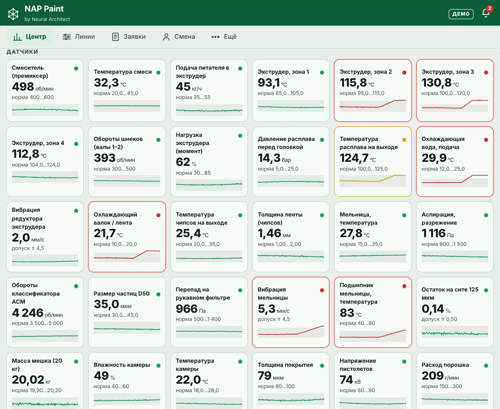
Скриншот демо: более 50 датчиков на одном экранеСкриншот демо: несколько ситуаций сразу, причины и что проверить
Схемы и ориентиры по параметрам типовые для отрасли, нормы в демо условные. В рабочей системе схема, число зон и места датчиков рисуются под ваше оборудование, а нормы задаёт технолог.
Единая система или отдельные модули
Контроль качества и безопасности продукции можно внедрить целиком: меньше брака, меньше корректировок, быстрее запуск и выше производительность. Либо внедрять модули по одному, под конкретную задачу.
Цвет и коррекция
Спектрофотометр, RAL, расчёт колоранта и дозы. Меньше корректировок.
Процесс и датчики
Смешение, экструзия, помол, нанесение, печь. Прогноз отклонений до появления брака.
Партии и прослеживаемость
Номер партии, паспорт качества, этикетка, срок хранения.
Безопасность
Контроль параметров, влияющих на безопасность: аспирация, температуры, журнал отклонений.
Помощник технолога
Подсказывает причины отклонений и порядок проверки. Работает на вашем сервере.
Нейросети подбираются под задачу
Одна самая большая сеть на все задачи не нужна и не всегда лучше. В системе работает набор моделей, каждая под свою задачу. Всё работает на вашем сервере локально, данные остаются на предприятии.
Прикладные нейросети
Прогноз отклонений по датчикам, подбор дозы колоранта, поиск аномалий, прогноз брака, настройка под каждую линию. Для отдельных задач — компактные модели. Для комплексной системы (цвет + процесс + прогноз + агенты) ориентир — от сотен миллионов до 1+ млрд параметров. Требуется сервер с GPU.
Модели свойств продукции
Прогноз результата по составу и режиму: цвет, блеск, отверждение и другие показатели, с учётом химии и технологии. Обучаются на ваших рецептах и результатах, могут сочетаться с расчётными методами. От десятков миллионов до сотен миллионов и выше в зависимости от объёма данных и задач.
Языковая модель
Помощник на русском (текст, при необходимости голос), работа с технологическими картами, регламентами и документами. Здесь используются модели в миллиарды параметров: нужен сервер с видеокартой.
Масштаб прикладных нейросетей
десятки–сотни млнпараметров. Отдельные модули: коррекция цвета, прогноз по датчикам, контроль одной–нескольких линий.
от ~1 млрдпараметров. Комплексная система: цвет + процесс + прогноз + ИИ-агенты + история партий. Сервер с GPU.
модульноМожно начинать с компактных моделей и наращивать мощность по мере роста данных и задач.
РасширенныйБолее мощные модели и архитектуры для сложных задач и мощного оборудования. Подбираются под задачу.
Число параметров характеризует размер сети, а не качество. Прогноз по составу и технологическим режимам упирается в объём и качество ваших данных: размер модели подбирают экспериментом, начиная с компактной и увеличивая, пока это улучшает результат. Каждая линия имеет свои особенности: используется общая модель с настройкой под конкретную линию. Что можно надёжно предсказывать, определяется на пилоте по истории ваших рецептов и результатов. Демонстрационная версия центра управления показывает принцип: данные в ней имитируются.
Комплексная система: видит процессы и предупреждает заранее
Если программа комплексная, могут использоваться модели с высокой вычислительной мощностью: сервер с графическими ускорителями на вашем предприятии.
Компьютерное зрение
Камеры и, при необходимости, тепловизоры наблюдают за процессами на линиях. Система замечает отклонения, перегрев оборудования и нарушения режима.
Предупреждение заранее
После обучения на данных вашего предприятия система может заранее предупреждать о риске пригорания и перегрева. Это помогает снизить брак и избежать поломок оборудования.
Локальная база данных
Вся база данных хранится на вашем сервере, данные не уходят наружу.
Коммерческая тайна
Все наработки предприятия — рецептуры, режимы, данные, обученные модели — остаются коммерческой тайной предприятия.
Индивидуально
Программа создаётся индивидуально под ваше производство, оборудование и задачи.
Точность предупреждений зависит от объёма и качества данных и проверяется на пилоте. Состав комплексной системы определяется при составлении технического задания.
Как это выглядит на производстве: два экрана
Макеты интерфейса показывают принцип: что система предупреждает и что ей для этого нужно. Это иллюстрации, а не снимки рабочей системы.
Центр предупреждениймакет интерфейса
Экструдер 2: растёт вибрация+18 % за 40 минут, порог по прогнозу через ≈ 6 ч
поломка
Партия 24-117: цвет уходит к границеΔE за три замера 0,4 → 0,6 → 0,9, допуск 1,0
брак
Печь 3: режим у границы окнатемпература и время близки к красной зоне карты режимов
пригорание
123
Предупреждение до брака и поломки
1
Поломка. Система следит за вибрацией, током и температурой узлов. Рост тренда виден раньше, чем узел остановится, поэтому ремонт можно запланировать, а не делать аварийно.
2
Брак. По серии замеров видно, что цвет партии дрейфует к границе допуска. Предупреждение приходит до выхода за допуск, и технолог успевает скорректировать.
3
Режим. Температура и время печи сравниваются с рабочим окном карты режимов. Риск пригорания виден до запуска.
Почему это важно. Остановка линии и партия в брак обходятся дороже планового обслуживания и корректировки. Система превращает «узнали после» в «узнали заранее». Цифры и пороги на макете условные, в рабочей версии они считаются по вашим данным.
123
Что нужно системе: нейросеть, параметры и визуальный контроль
1
Камера для цеха. Промышленная камера в пылезащищённом корпусе (класс защиты IP65–IP67) с продувом воздухом и защитным стеклом. В запылённых зонах это обязательное условие, иначе картинка быстро теряет качество.
2
Контрольные точки: чипсы. Нейросеть находит чипсы на охлаждающем конвейере и отмечает слишком крупные, с пятнами или другим цветом. Отклонение попадает в журнал вместе с кадром.
3
Контрольные точки: задвижки. Камера проверяет положение задвижки и заслонки. Если открыто то, что должно быть закрыто, технолог получает предупреждение.
Задача
Ориентир по параметрам
Цвет и коррекция
3 координаты L*a*b* и 5–8 колорантов
Нагрев и отверждение
4–6: температура, время, скорость конвейера, слой
Предупреждение о поломках
10–30 каналов на узел: вибрация, ток, температуры
Визуальный контроль
1–4 камеры на линию, 5–15 контрольных точек на камеру
Это ориентиры для пилота, а не гарантия. Больше параметров не значит лучше: начинают с 10–20 ключевых и добавляют только те, что реально влияют на брак. Итоговый набор определяется на данных вашего производства.
Оборудование в разрезе: где стоят датчики
Схемы основных машин линии порошковых красок: смеситель, экструдер, мельница, сито и печь отверждения. Это обобщённые схемы, а не фотографии: на вашей линии конфигурация может отличаться. Если у вас есть фото оборудования, положите их в img/equipment/, и рядом со схемой появится вкладка «Фото». Цифры показывают типовые точки контроля, из которых получаются параметры для нейросети.
1234
Смеситель в разрезе
1
Привод мешалки. Ток двигателя. По нагрузке видно, что смесь готова или чаша перегружена.
2
Измельчитель. Ток и вибрация. Рост вибрации говорит об износе ножей или подшипников.
3
Температура в чаше. Перегрев вызывает слипание компонентов ещё до экструдера.
4
Выгрузка. Масса партии и положение клапана.
Итог. Время и скорость смешения определяют однородность смеси, как в демо «порошки». От неё зависит, будет ли цвет одинаковым от партии к партии.
12345
Экструдер в разрезе
1
Привод. Ток и момент двигателя. Рост нагрузки говорит о забивании или износе.
2
Подшипники и редуктор. Вибрация и температура. Ранний признак износа и основа предупреждения о поломке.
3
Зоны корпуса. Температура по зонам. От неё зависят проплавление смеси и риск преждевременного отверждения внутри экструдера.
4
Фильера. Давление и температура расплава. Скачки показывают нестабильную подачу или забивание.
5
Камера над конвейером. Чипсы после охлаждения: размер, цвет, пятна.
Итог. Каждая точка превращается в параметр для нейросети. Большинство из них даёт штатная автоматика, камеру добавляют там, где глаз оператора не успевает.
12345
Мельница в разрезе
1
Питатель. Скорость подачи. Резкие скачки подачи портят размер частиц и греют камеру.
2
Ротор. Ток двигателя и вибрация подшипников. Основа предупреждения о поломке мельницы.
3
Классификатор. Скорость колеса задаёт размер частиц: по замеру размера её подстраивают.
4
Температура воздуха на выходе. Перегрев приводит к слипанию порошка и налипанию на стенки.
5
Фильтр. Перепад давления. Рост говорит о забивании.
Итог. Размер частиц влияет на цвет, блеск и расход порошка, поэтому мельница в модели идёт сразу после экструдера.
1234
Вибросито в разрезе
1
Загрузка. Расход порошка. Перегруз снижает качество просева.
2
Вибромотор. Ток и вибрация. Изменение амплитуды говорит об износе подвесок или пружин.
3
Сетка. Перепад давления или камера над ситом. Рваная или забитая сетка пропускает крупные частицы.
4
Крупная фракция. Доля отсева. Рост показывает проблему выше по линии: мельницу или экструдер.
Итог. Сито последний барьер перед упаковкой, поэтому по доле отсева удобно искать причину брака вверх по линии.
12345
Печь отверждения в разрезе
1
Температура воздуха по зонам. Показывает, что делает печь, но не то, что получает деталь.
2
Температура детали. Профиль прогрева детали важнее температуры воздуха: именно деталь должна выдержать нужное время при нужной температуре.
3
Скорость конвейера. Вместе с длиной печи задаёт время нагрева. Это вторая ось карты режимов.
4
Вытяжка и расход воздуха. Влияют на равномерность нагрева и чистоту покрытия.
5
Камера на выходе. Цвет и блеск готовой детали возвращаются в модель и уточняют прогноз.
Итог. Температура, время и скорость конвейера связывают печь с картой режимов из блока про нагрев: оттуда видно, где рабочее окно, а где риск пригорания.
Скриншот для производства: нейросети и их размер, локальный сервер и визуальный контроллер. Камера в пыленепроницаемом корпусе фиксирует чипсы на ленте, задвижки и другие контрольные точки
Чем отличается от готовых решений
Готовые решения хорошо закрывают свою часть задачи. Индивидуальная система объединяет цвет, производство, роли, документы и помощника в одном месте и подстраивается под процесс предприятия.
Возможность
Готовое цветовое ПО
Типовая MES и диспетчеризация
Индивидуальная система
Коррекция цвета под ваши колоранты и прибор
Сильная сторона
Как правило, нет
Под вашу базу колорантов, прибор и рецептуры
Заявки, смены, линии, партии
Ограниченно
Да, в типовом виде
Под ваши этапы, статусы и поля
Датчики и тревоги в реальном времени
Нет
Да
Да, с прогнозом отклонений
Роли и доступы
Базовые
Типовые наборы
Индивидуальные, редактируются и расширяются
Этикетки и паспорта качества
Часто отдельным модулем
Часто отдельным модулем
В составе системы, по вашей форме
Помощник на русском (текст, при необходимости голос)
Как правило, нет
Как правило, нет
Возможен, работает на ваших регламентах
Работа на вашем сервере без интернета
Зависит от поставщика
Зависит от поставщика
Да, по требованию предприятия
Подстройка под ваш процесс
В рамках настроек продукта
В рамках настроек продукта
Основа подхода
Обобщённое сравнение типов решений, а не оценка конкретных продуктов. Возможности готовых решений зависят от поставщика и версии.
Что влияет на состав работ
количество и тип оборудования, приборов и датчиков, которые нужно подключить;
наличие исторических данных для обучения нейросети;
масштаб нейросети: компактная модель или более мощная;
глубина помощников: подсказки или выполнение задач, текст или голос;
количество ролей и сложность прав доступа;
требования к локальной работе, безопасности и отчётности.
Внедрять можно поэтапно: сначала пилотный участок, затем расширение на остальное производство. Все эти вопросы обсуждаются при составлении технического задания.
Сроки и формат работы
Программа создаётся индивидуально под конкретное производство и его особенности: задачи, приборы, линии, базу колорантов, процессы и сотрудников.
1 модуль2–4 месяца. Например: коррекция цвета или подключение оборудования по своим протоколам. Срок зависит от сложности.
Полный проектСрок рассчитывается от количества модулей, интеграций и объёма обучения моделей. Каждый дополнительный модуль увеличивает срок пропорционально.
НейросетьРазработка, обучение и подключение — по объёму данных и задачам. Для комплексной системы (от ~1 млрд параметров) учитывается время на сбор данных.
ВнедрениеВнедрение в производство, обучение персонала и сопровождение обсуждаются при заключении договора.
Итоговый срок формируется индивидуально после составления технического задания и зависит от числа модулей, сложности интеграций и объёма данных.
Состав ролей и прав доступа, этапы процессов, отчёты и всё необходимое для работы согласуются при составлении технического задания (ТЗ).
Работаю с юридическими лицами (ООО, ИП и др.) по договору. Варианты: разработка под ключ или передача прав.